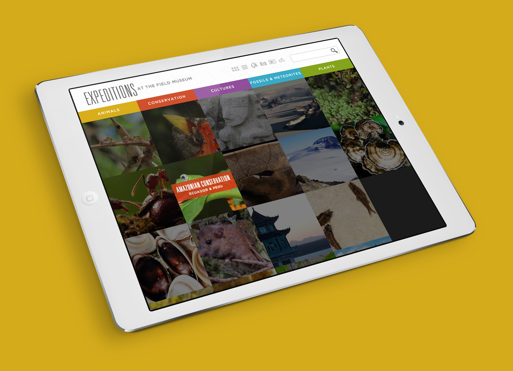
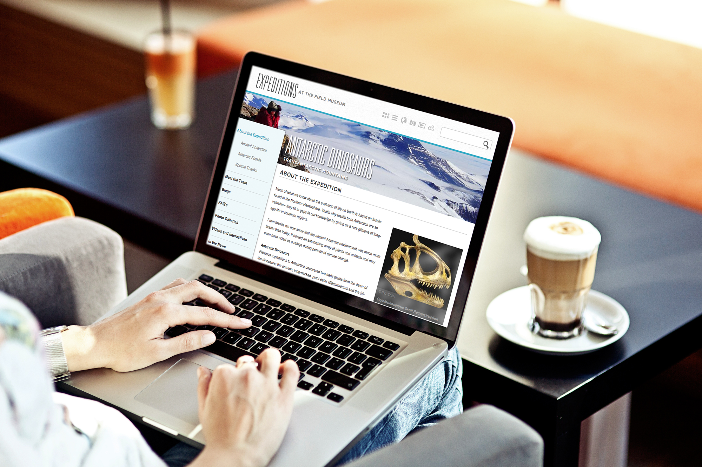
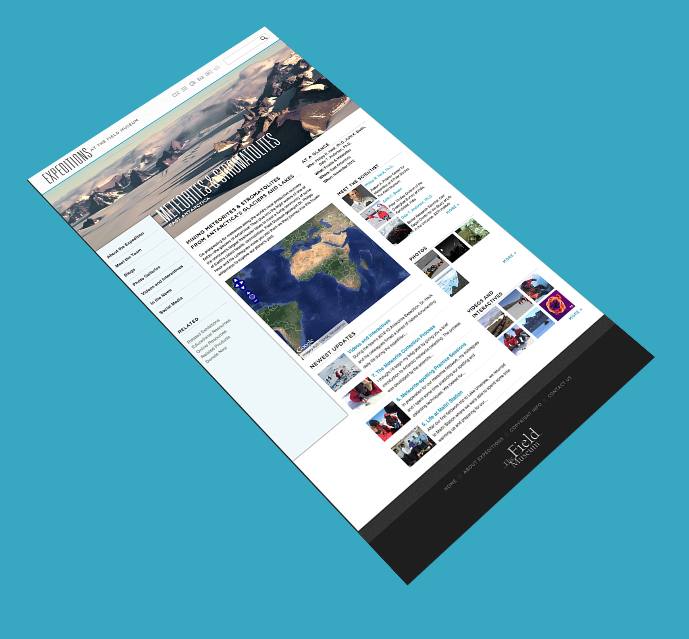
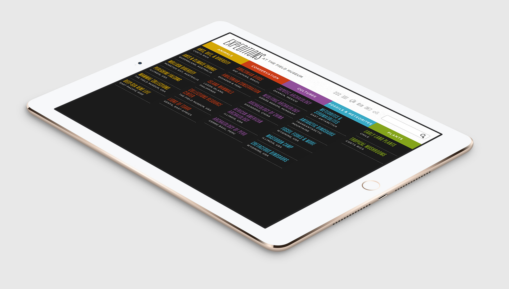

Home/About
State & Chestnut
Field Museum Expeditions
QUEsocial
Field Museum Zoology
Priester Aviation
Luxury Residence Group
Jarden Life Sciences
FOUR40
Collection
Home/About
State & Chestnut
Expeditions
QUEsocial
Zoology
Priester Aviation
LRG
Jarden Life Sciences
FOUR40
Collection
Design, UI/UX, Development
Field Museum Expeditions




Share